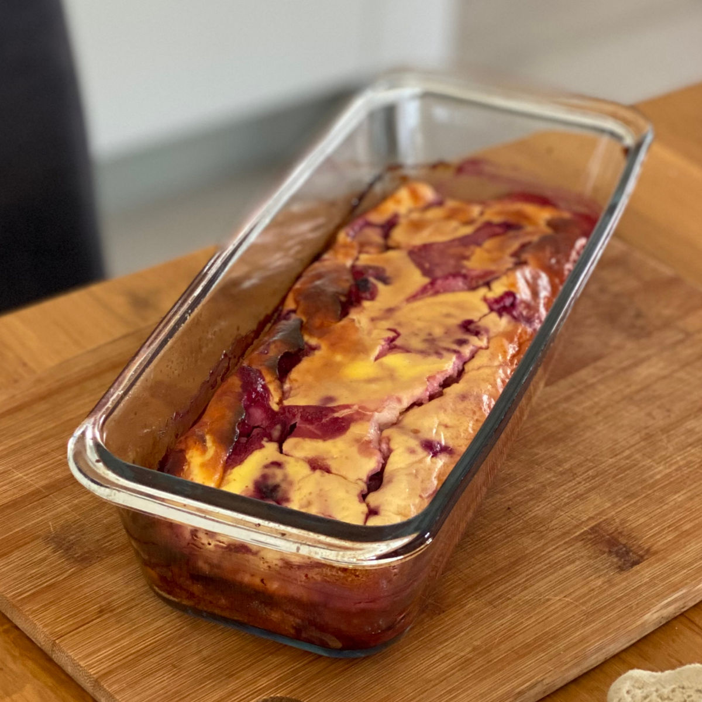
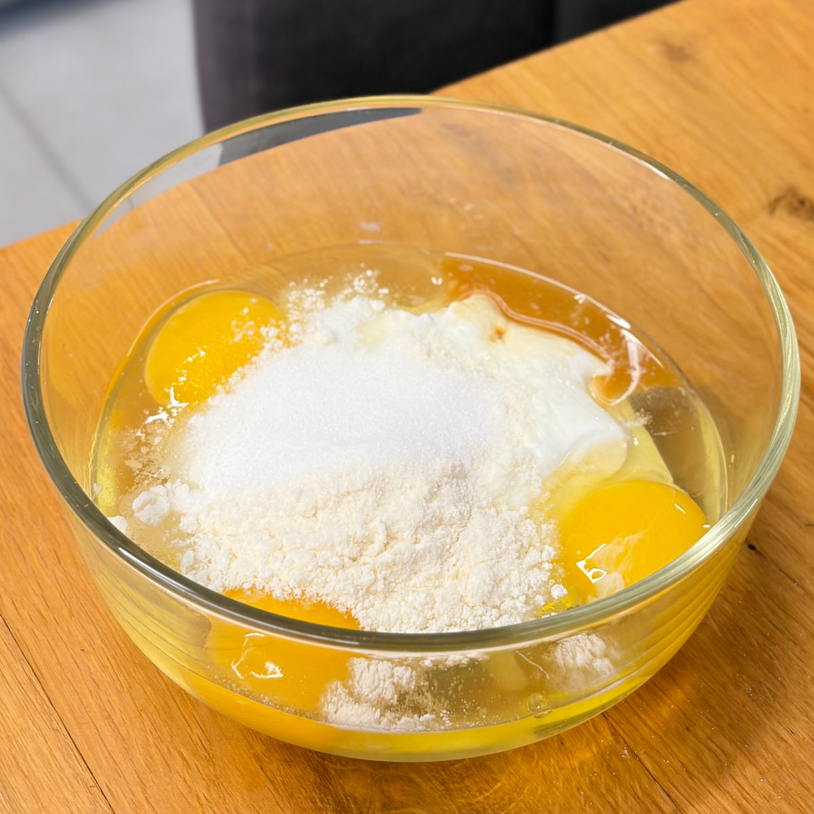
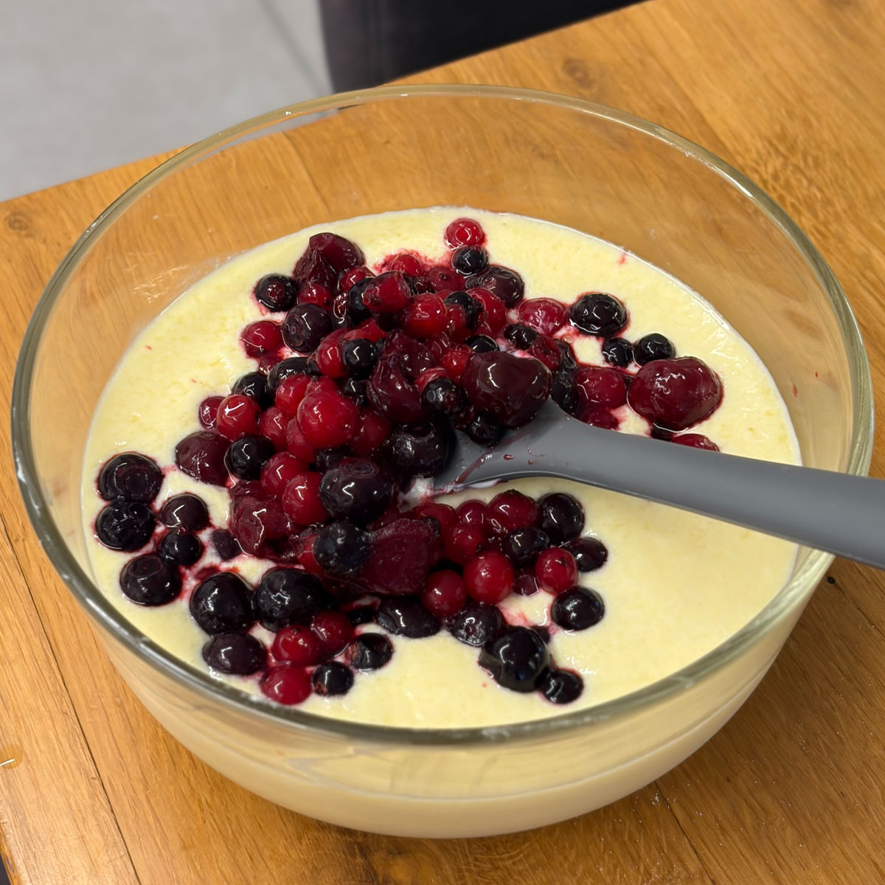
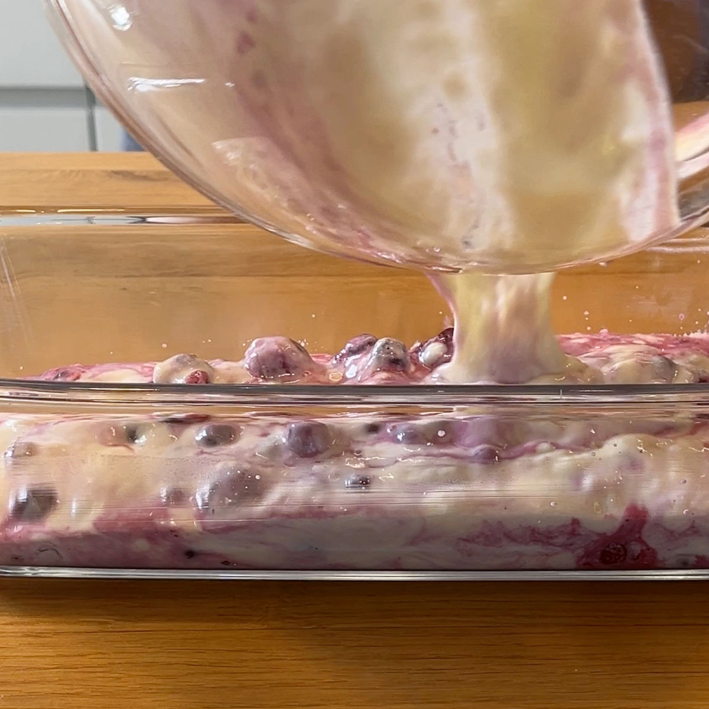

עוגת יוגורט הכי פשוטה שיש
עודכן: 22 באפר׳
טבלת ערכים תזונתיים בקירוב:
שימו לב שהערכים משתנים כתלות בממתיק, טבלה זו היא עבור ממתיק סוויטאנגו ויוגורט פרו 1.5%
| ערכים | פרוסה (80 גרם) | 100 גרם |
|---|---|---|
| קלוריות | 88.8 | 111 |
| פחמימות | 4.8 | 6 |
| חלבונים | 8 | 10 |
דבר ראשון, המתכון מבוסס כמעט כולו על מתכון שראיתי בטיק טוק עם שינוי קטן שלי, תודה רבה ליוצרת לילי סברי, כמובן מוזמנים לצפות בסרטון המעולה ולנסות גם את הגרסה שלה, הנה
הקישור לסרטון
הסיבה שהעלתי אותו לאתר זה למרות שלא עשיתי בו שינויים רבים היא כדי להנגיש לכם את המרכיבים בצורה נוחה בעברית עם ממתיקים שזמינים בארץ. אני מודה מקרב לב ללילי אשר עשתה עבודה נפלאה עם עוגה זו והייתה בין הקינוחים הבריאים הראשונים שניסתי.
לעוגת היוגורט הזו יש סיפור מיוחד. היא נולדה בתקופה שבה אמא שלי החליטה להתמקד בתזונה בריאה ומאוזנת. בעזרת התזונאי רן צורי, היא למדה על החשיבות של חלבון.
כדי לעזור לה לשלב חלבון בצורה טעימה ופשוטה, התחלתי להכין את עוגת היוגורט הזו. היא דלת קלוריות, עשירה בחלבון וקלילה לאכילה – מושלמת למי שמחפש משהו מזין ולא כבד. מהר מאוד היא הפכה להרגל קבוע בבית, ואני מוצאת את עצמי מכינה אותה שוב ושוב.
זו עוגה פשוטה וטעימה – אפשר להכין אותה בכמה וריאציות, והיא תמיד מתחסלת ביום.

המתכון:
תבנית: אינגליש קייק
מרכיבים:
3 ביצים L
260 גרם יוגוט יווני 6.5% (אני משתמשת בשל דנונה) / יוגורט 1.5% של פרו ללא טעם (אם מקפידים על צריכת קלוריות וחלבון זו אופציה עדיפה)
10 גרם קמח קוקוס
30 גרם סוויטאנגו (2 כפות) / 55 גרם דבש (שימו לב: דבש אינו מתאים לסוכרתיים ולקיטוגנים)
200 גרם פירות יער קפואים (ראו הערות לפירות אחרים)
הוראות הכנה:
מחממים תנור ל180 מעלות (אני עובדת על מצב טורבו אך לא חובה).
מערבבים את כל המרכיבים יחד בקערה מלבד פירות היער.
משמנים תבנית בשמן קוקוס או חמאה ושופכים חצי כמות מפירות היער לתחתית התבנית
את החצי הנותר של פירות היער יש לערבב לבלילה ויצור מעיין מראה משויש.
אופים כ 40 דקות בתנור על המגש עליון.
הערות:
הכנתי את העוגה הזו פעמים רבות ולכן אני אוהבת לגוון בה. אני מחליפה את פירות היער באגסים או תפוחים עם כפית קינמון. במצב כזה אטגן קצת את הפרי הנבחר על מחבת עם כף מים יחד עם 5 גרם מהממתיק עד לריכוך ואדוי המים כך שהמרקם לא יהיה נוזלי, לאחר הקירור אוסיף את הפרי לבלילה ולתחתית התבנית.
ניתן להחליף גם לשזיפים, אפרסקים, משמשים, נקטרינות, תותים (כל אלו עדיף ללא קינמון אך עדיין ממומלץ לצרוב קלות כדי להדגיש את מתיקות הפרי).
סרטון מתהליך ההכנה:
לינק לסרטון קצר
תמונות מתהליך ההכנה:

בלילת העוגה

הוספת פירות יער

העברה לתבנית